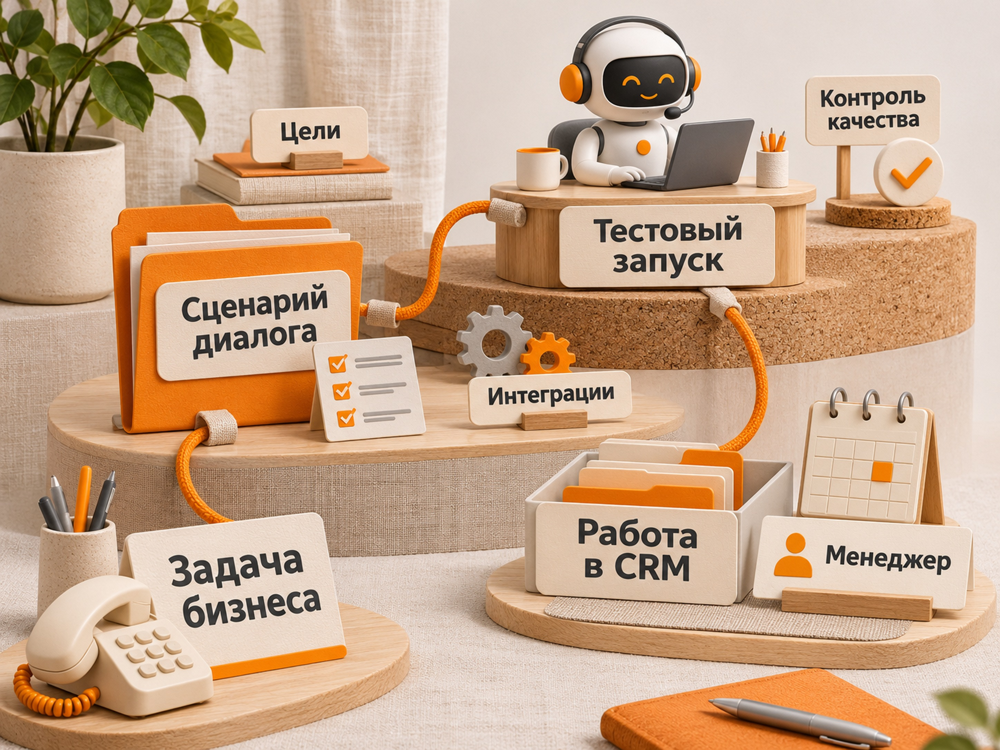
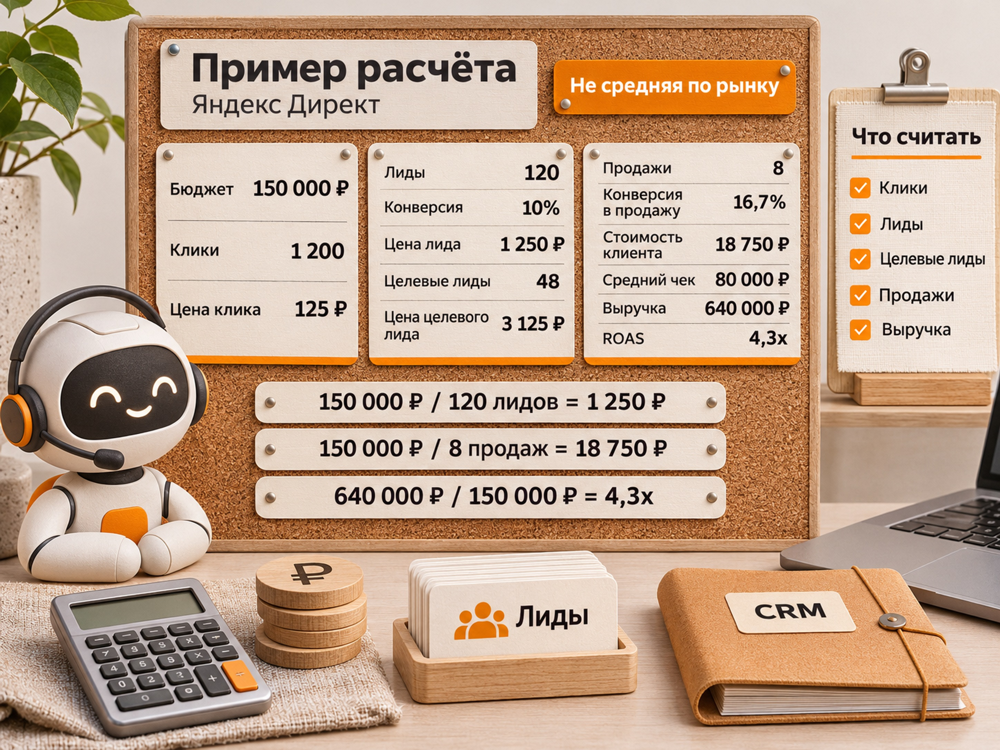

Блог о платном трафике и автоматизации продаж
Как продвигать голосовых роботов и ИИ-сотрудников для бизнеса
Эта статья предназначена для компаний, которые разрабатывают и внедряют голосовых роботов и ИИ-сотрудников. Разберём, как упаковать такую услугу, разделить спрос по задачам клиента, получить B2B-заявки из Яндекс Директа и считать не формальный CPL, а стоимость квалифицированного лида и договора.
Кому продавать голосовых роботов и ИИ-сотрудников
Покупатель ищет не технологию как таковую, а способ обработать конкретный поток обращений. Поэтому сегментировать рекламу нужно по процессу, объёму коммуникаций и ожидаемому результату.
| Сегмент спроса | Задача клиента | Что показывать в рекламе |
|---|---|---|
| Первая линия | Принять звонок, определить тему, перевести оператору | Долю обработанных звонков, скорость маршрутизации, передачу контекста |
| Исходящий обзвон | Реактивировать базу, подтвердить запись, провести опрос | Объём базы, сценарий, стоимость контакта, запись результата в CRM |
| Квалификация лидов | Уточнить бюджет, сроки, регион и потребность | Правила квалификации и передачу целевого лида менеджеру |
| Запись на услугу | Записать, подтвердить или перенести визит | Интеграцию с расписанием и снижение пропущенных обращений |
| Поддержка | Ответить по базе знаний и создать обращение | Темы, которые закрывает робот, и момент передачи человеку |
Голосовой робот обычно решает ограниченный набор задач по телефону. ИИ-сотрудник может дополнительно работать в чатах, использовать базу знаний и создавать задачи в CRM. Для рекламы важнее не название решения, а границы процесса, интеграции и измеримая бизнес-метрика.
Какие задачи отдавать ИИ-сотруднику
Хорошая задача для автоматизации повторяется, имеет понятный вход и допускает проверяемый результат. Если сотрудник каждый день задаёт примерно одни и те же вопросы, сверяет данные по правилам и записывает итог в CRM, такой процесс можно рассматривать для пилота.
Сценарии с понятной отдачей
- первая линия входящих звонков и маршрутизация по теме;
- запись на услугу, подтверждение визита и перенос записи;
- квалификация заявки по бюджету, срокам, географии и задаче;
- реактивация базы и повторный контакт после пропущенной заявки;
- ответы на типовые вопросы по базе знаний;
- расшифровка, оценка и суммаризация разговоров менеджеров.
Где нельзя начинать с полной автономности
Сложные переговоры, нестандартные претензии, финансовые решения, медицинские и юридические консультации требуют чётких границ ответственности. Робот может собрать данные и предложить маршрут, но в сценарии должен быть момент передачи живому специалисту.
Исследование НИУ ВШЭ и Cloud.ru показывает ту же практическую картину: полностью автономные агенты в российской практике почти не встречаются, более 80% опрошенных компаний определяют ситуации для подключения человека, а 86% адаптируют процессы после внедрения. Это сильный аргумент в пользу модели «ИИ плюс менеджер», а не рекламного обещания безлюдной компании.
Перед запуском опишите сценарий на одном листе: кто звонит, с каким вопросом, какие данные нужно получить, что считается успехом и при каком условии разговор передаётся человеку.

Что показывают свежие российские кейсы
Публичные кейсы полезны как подтверждение применимости технологии, но их нельзя автоматически превращать в рыночную норму. У проектов разные объёмы обращений, процессы, тарифы, качество базы и правила подсчёта результата.
Ренессанс Страхование и голосовой агент
В апреле 2026 года «билайн бизнес» сообщил о первой фазе проекта для «Ренессанс Страхование». Агент работал по 18 тематикам, был связан с телефонией, CRM и каналами уведомлений. По данным заказчика, после двух месяцев эксплуатации уровень автоматизации составил 52%, среднее время обработки звонка - 100 секунд, а доля клиентов, не готовых говорить с голосовым помощником, снизилась с 60% до 30%.
Кейс важен не только цифрой автоматизации. В нём видна последовательность, которую стоит продавать и другим компаниям: интеграция, ограниченный набор тем, настройка сценариев, измерение реакции клиентов и дальнейшее расширение.
«Петрович» и первая линия контакт-центра
В октябре 2026 года сообщалось о внедрении голосового ИИ-помощника на первой линии «Петровича». Система обрабатывает более 8000 звонков в день, определяет тему обращения, задаёт уточняющие вопросы и передаёт контекст оператору. Время перевода клиента к нужному специалисту сократилось с 53 до 30 секунд, а успешная маршрутизация достигла 95%.
Это пример другой модели ценности. Робот не обязан закрывать продажу сам. Иногда его результат - быстро довести клиента до нужного сотрудника и не заставить повторять вопрос.
Что из этого следует для продвижения
- продавайте не «нейросеть», а конкретный процесс и его измеримую метрику;
- показывайте интеграцию с телефонией, CRM и передачей человеку;
- выносите в кейс исходную проблему, период теста, объём обращений и методику подсчёта;
- отделяйте автоматизацию, скорость обработки, качество маршрутизации и финансовый результат.
Как продвигать голосовых роботов и ИИ-сотрудников
Посадочная страница под один сценарий
На первом экране посадочной страницы должен быть не общий заголовок «ИИ для бизнеса», а понятная связка из задачи, канала и результата. Например: «Голосовой помощник для первой линии», «ИИ-квалификация входящих заявок», «Реактивация базы звонками с записью результата в CRM».
Дальше покажите задачу и ограничения, пример диалога, схему интеграции, этапы пилота, кейс с исходными данными и расчёт результата. В форме запроса спросите объём обращений, CRM, нужные интеграции, срок запуска и ориентир по бюджету. Такая форма отсечёт часть случайных заявок ещё до разговора.
Офферы по отраслям
Один общий оффер «ИИ-сотрудник для бизнеса» слишком абстрактен. Клиникам показывайте запись и подтверждение визита, застройщикам и агентствам - квалификацию по бюджету и объекту, интернет-магазинам - статус заказа и повторные продажи, сервисным компаниям - первую линию и распределение звонков, отделам продаж - реактивацию базы и возврат пропущенных лидов.
Меняйте не только название отрасли. На посадочной странице должны отличаться сценарий разговора, интеграции, критерий целевого обращения и показатель результата.
Структура кампаний в Яндекс Директе
Для этой ниши Директ подходит прежде всего там, где уже сформирован спрос. На поиске тестируйте отдельные группы запросов:
- прямые: «голосовой робот для бизнеса», «ИИ-оператор», «виртуальный менеджер»;
- сценарные: «робот для обзвона базы», «автоматизация входящих звонков», «бот для квалификации заявок»;
- проблемные: «как не терять звонки», «чем заменить первую линию поддержки», «как обрабатывать заявки ночью».
Покупательский спрос содержит формулировки «купить», «заказать», «внедрение», «разработка», «цена», название задачи или интеграции. Его ведите на коммерческую посадочную страницу. Исследовательский спрос с вопросами «что это», «как работает», «примеры» и «сравнение» ведите на статью, кейс или демонстрацию, а затем возвращайте ретаргетингом.
Разделите кампании минимум на прямой продуктовый спрос, отдельные сценарии использования, отраслевые связки и брендовые запросы. Не объединяйте входящую линию, массовый обзвон и сложного ИИ-агента в одну группу: у них разные объявления, посадочные страницы, цена внедрения и квалификация.
Не смешивайте в одной посадочной странице дешёвый сценарный обзвон и сложного ИИ-агента со свободным диалогом. У них разные ожидания, стоимость запуска и аргументы в пользу покупки.
В кейсе продвижения ИИ-ассистентов для бизнеса 70% бюджета направили на поиск и 30% оставили на РСЯ. Автор кейса объяснил это более высоким качеством поисковых обращений. Это не правило для любой кампании, но разумная стартовая гипотеза для ниши со сформированным спросом.
РСЯ имеет смысл подключать после проверки оффера и поисковых запросов. Здесь можно тестировать аудитории владельцев бизнеса, руководителей продаж и контакт-центров, сегменты Метрики и ретаргетинг посетителей, которые изучали кейс или страницу с расчётом. Не оценивайте РСЯ по кликам: для неё нужны отдельные цели и контроль качества обращений.
Другие каналы
Контент и собственные каналы нужны для объяснения сложного продукта. Публикуйте разборы сценариев, записи демонстраций, сравнения «до и после», калькуляторы нагрузки и ответы на возражения. Telegram и деловые сообщества подходят для прогрева и партнёрских рекомендаций, а прямые продажи - для выхода на компании с большим объёмом звонков.
Для B2B обычно работает связка: поисковая реклама приводит сформированный спрос, статья или кейс снимает недоверие, а консультация уточняет процесс и собирает исходные данные для расчёта. Отправлять весь трафик сразу на форму «закажите ИИ-сотрудника» слишком рано, если на странице нет доказательств и понятной экономики.
Квалификация и сквозная аналитика
Минимальный набор целей: отправка формы, клик по телефону, начатый звонок, квалифицированная заявка, назначенная встреча и продажа. Последние два события нужно передавать из CRM, иначе Директ будет оптимизироваться по дешёвым, но случайным обращениям.
Для B2B-заявки фиксируйте объём звонков или диалогов, текущую CRM и телефонию, нужные интеграции, сценарий, срок запуска, бюджет и наличие ответственного со стороны клиента. Только после этого обращение можно считать квалифицированным.
Продажа может занять несколько недель или месяцев, поэтому передавайте из CRM офлайн-конверсии: квалифицированный лид, встречу, пилот, договор и выручку. Иначе Директ будет обучаться на отправках формы, среди которых могут быть компании без нужного объёма или бюджета.
При малом потоке не дробите данные на десятки целей. Сначала накопите стабильную передачу квалифицированных лидов, затем используйте эту цель для оптимизации.
Практический разбор настроек и целей можно дополнить материалами о проверке рекламной кампании, конверсии лида в продажу и прогнозе бюджета Яндекс Директа.
Сколько стоит лид и клиент
Самый конкретный свежий рекламный ориентир в этой нише - кейс запуска Яндекс Директа для ИИ-ассистентов и AI-агентов для бизнеса. В нём указаны общий расход 318 610 ₽ с НДС, 86 обращений в рекламном кабинете и примерно 30% дополнительных обращений по звонкам. Итоговая оценка составила около 111 обращений, средний бюджет - около 100 000 ₽ в месяц, стоимость обращения с учётом звонков - 2870 ₽.
В том же кейсе автор указывает закрываемость около 20%, но не раскрывает полную сквозную таблицу сделок и выручки. Если механически применить 20% к оценочным 111 обращениям, получится около 22 сделок, а пересчёт общего расхода даст примерно 14 400 ₽ за сделку. Это расчёт по опубликованным данным, а не отдельная цифра из кейса.
Осторожность здесь обязательна: кейс опубликован исполнителем, часть звонков оценена приблизительно, а в общей статистике был отдельный тест с другой целью. Поэтому его можно использовать как ориентир для постановки гипотезы, но нельзя писать, что рынок голосовых роботов стабильно даёт CPL 2870 ₽.
Из чего складывается полная экономика
| Показатель | Что считать | Зачем нужен |
|---|---|---|
| Расход на рекламу | Пополнения и фактический расход | База для CPL и CAC |
| Лид | Обращение с нужным контактом | Проверка цены входа |
| Целевой лид | Подходит по задаче, бюджету и региону | Отсечение дешёвого мусорного объёма |
| Продажа | Оплата или подписанный договор | Расчёт стоимости клиента |
| Маржа | Выручка минус продукт, внедрение и обслуживание | Проверка окупаемости |
К рекламному бюджету нужно добавить стоимость внедрения и эксплуатации. Публичные тарифы отдельных поставщиков показывают, почему одной цифры «цена робота» недостаточно: МТС Бизнес указывает диапазон от 0,21 ₽ за минуту для простых шаблонных звонков до 4,75 ₽ за сложный интерактивный диалог, а VoiceLogic публикует тарифы от 6 ₽ за минуту для сценарного бота и от 12 ₽ для AI-бота. Эти предложения нельзя усреднять: у них различаются функции, телефония, тарификация и состав работ.
Отдельно закладываются сценарий, телефония, интеграция с CRM, тестирование, контроль качества и доработки. Если этого нет в расчёте, стоимость клиента выглядит лучше, чем есть на самом деле.

Учебный расчёт
Возьмём не рыночную норму, а прозрачное допущение для проверки собственной модели:
- бюджет - 150 000 ₽;
- 1200 кликов по 125 ₽;
- 120 лидов, то есть конверсия сайта 10% и CPL 1250 ₽;
- 48 целевых лидов, или 40% от всех обращений;
- 8 продаж, или 16,7% от целевых лидов;
- стоимость клиента - 18 750 ₽;
- средний чек - 80 000 ₽, выручка - 640 000 ₽, рекламный ROAS - 4,3.
Этот пример не показывает чистую прибыль. Из выручки ещё нужно вычесть разработку, минуты, телефонию, работу менеджеров, налоги и стоимость исполнения. Его задача - показать порядок расчёта и место, где появляется реальная стоимость клиента.
Прогноз на ближайшие 12 месяцев
Мой прогноз: в течение ближайших 12 месяцев рынок будет смещаться от продажи «бота» к продаже связанного процесса. Конкурировать будут не только голос и качество синтеза речи, а база знаний, интеграция с CRM, сохранение контекста между каналами, контроль диалогов и понятная ответственность за ошибку.
Причина видна в свежих исследованиях. В исследовании НИУ ВШЭ и Cloud.ru более 70% респондентов отметили обращение к внешним разработчикам, 55% компаний используют агентов со средней степенью автономности, а 33% - с высокой или полной. При этом 40% организаций за последний год отключали отдельные функции или возвращались к предыдущей версии из-за проблем с безопасностью, а 31% сталкивались с инцидентами, требовавшими реакции.
Следовательно, сильнее будут расти решения, где заранее определены границы: что робот делает сам, какие данные ему доступны, когда включается сотрудник, кто контролирует качество и как считается финансовый результат. Для рекламодателя это означает, что кейс с одной красивой демонстрацией будет слабее кейса с картой процесса, цифрами до и после и понятной методикой.
Пошаговый план запуска
- Выберите один процесс. Например, входящая первая линия, реактивация базы или квалификация заявок.
- Зафиксируйте исходную точку. Запишите количество обращений, долю пропущенных звонков, время обработки, конверсию в целевой лид и продажу.
- Соберите посадочную страницу. Покажите сценарий, ограничения, интеграции, передачу менеджеру и пример расчёта.
- Настройте аналитику. Передавайте в Метрику и CRM не только отправку формы, но и квалификацию, встречу, продажу и выручку.
- Запустите поиск. Начните с прямых и сценарных запросов, разделите географию и минус-слова, не смешивайте разные продукты.
- Проведите пилот. Сначала проверьте качество диалога и записи результата на ограниченном потоке, затем подключайте РСЯ и масштабирование.
- Пересчитайте экономику. Сравните CPL, стоимость целевого лида, стоимость клиента и маржу. Если дешёвые обращения не доходят до продажи, оптимизируйте не ставку, а процесс.
Для этой ниши лучший первый оффер - не «мы внедрим вам ИИ», а конкретный пилот с понятным объёмом обращений, сроком, интеграцией и критериями успеха. Так рекламный бюджет проверяет не модное слово, а реальную бизнес-модель.